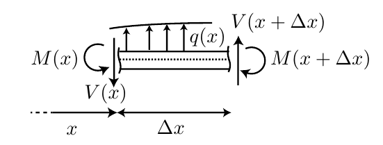
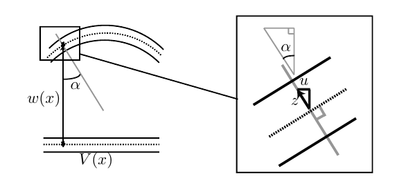

Beams and Bars
In common between beams and bar models
The object we consider are that beam and bars are long compared to its cross-section. The also assume small deformations in both cases.
We write the displacement vector as
\[ \boldsymbol{u} = [u,v,w]^T \]
In the bar model, we solve for the horizontal displacement \(u = u(x)\), while in the beam models, we solve for the vertical displacement \(w = w(x)\).
Bar model
Assumptions
We make a few assumptions in the bar model
- External force are in the x-directions (\(K_x A\)).
- Cross-section << Length. Stress is uniaxial \(\boldsymbol{\sigma} = \sigma \hat{\boldsymbol{e}}_1 \hat{\boldsymbol{e}}_1\).
- Stress is homogeneous in the cross-section \(\sigma = N/A\)
Equilibrium of forces
Writing the equilibrium of forces gives
\[ -\frac{dN}{dx} = K_x A \]
Differential equation
\[ -\frac{d}{dx}\left[ EA \frac{du}{dx}\right] = K_x A + \rho A \ddot{u} \tag{1}\]
Quasistatic formulation (\(\dot{u} = 0\)):
\[ -\frac{d}{dx}\left[ EA \frac{du}{dx}\right] = K_x A \]
Possible boundary conditions:
- Prescribed displacement \(u = \hat{u}\)
- Prescribed normal force \(N=\hat{N}\)
- Mixed condition e.g. \(N=k u\)
Eigenmodes
Assume a solution to Equation 1 can be separated into two terms
\[ u(x,t) = U(x) \sin(\omega t) \]
Following the lecture notes
Beam models
- External forces are in the z-direction (vertical).
- Cross-section << Length. Stress is not uniaxial, normal stress \(\sigma_{xx}\) and shear stresses \(\sigma_{xz}\).
- Stress vary linearly in the cross-section \(\sigma_{xx} = -E z w''(x)\)
Equilibrium of forces

Derivation during the lecture (or video lecture)
\[ \frac{dV}{dx} = - q(x) \tag{2}\]
\[ \frac{d M}{dx} = V(x) \tag{3}\]
Kinematic assumption
The key assumption for an Euler-Bernoulli beam, with the consequence that the horizontal displacement is not free but depends on \(w(x)\):

\[ u(x,z) = -z w'(x) \]
This assumption will be relaxed for Timoshenko’s beams (Later in the course).
Differential equation with boundary condition
\[ M(x) = \int_A \sigma(x,z) z dA = - EI w''(x) \]
Which combined with Equation 3 and Equation 2 gives
\[ \frac{d^2}{d x^2} (EI w''(x)) = q(x) \]
With \(I = \int_A z^2 \; dA\). Special case when \(EI\) (beam stiffness) is constant:
\[ EI \frac{d^4 w}{dx^4} = q(x) \]
Possible boundary conditions:
- Prescribed displacement \(w = \hat{w}\)
- Prescribed rotation \(w' = \hat{w}'\)
- Prescibred shear force \(V = \hat{V}\)
- Prescribed moment \(M = \hat{M}\)
Eigenmodes
Same idea as for the bar problem, assume a separable solution
\[ w(x) = W(x) \sin(\omega t) \]
Resulting equation for \(W\) with \(q=0\):
\[ \frac{d^4 W}{d x^4} - \omega^2 \frac{\rho A}{EI} W = 0 \]
Interactive widget with a cantilever beam/bar
Eigenmodes interactive
Cantilever driven by a harmonic tip force F sin ωt. Solving W⁗ − β⁴W = 0 with β⁴ = ω²ρA/EI and the clamp and tip conditions gives the tip amplitude at every frequency; the gain is that amplitude divided by the static tip deflection FL³/3EI.
ω₁ = 1.8751² √(EI/ρAL⁴) is the first natural frequency; the dashed verticals are ω₁, ω₂ = 6.27 ω₁ and ω₃ = 17.55 ω₁, from 1 + cos βL cosh βL = 0. The gain dips between resonances at anti-resonances (tan βL = tanh βL), where the tip stands still while the rest of the beam vibrates. That dip is a property of driving and measuring at the same point; a response measured elsewhere has its dips at other frequencies.
The equation on the page is undamped, so its resonance peaks are infinite. To keep them finite the bending stiffness is taken as EI(1 + iη) (hysteretic loss factor η); η → 0 recovers the undamped curve, and the static gain is 1/|1 + iη| ≈ 1. Phase runs from 0° (tip in phase with the force) to −180° (in anti-phase), switching at each resonance and anti-resonance. A hollow marker means the current gain is outside the plotted window.
The drawn shape is the real part of W(x) after removing one overall phase, shown with its mirror image (the other half-cycle); small circles are nodes. Euler–Bernoulli theory neglects shear deformation and rotary inertia, so the higher modes are only accurate while the wavelength stays long compared with the beam depth.